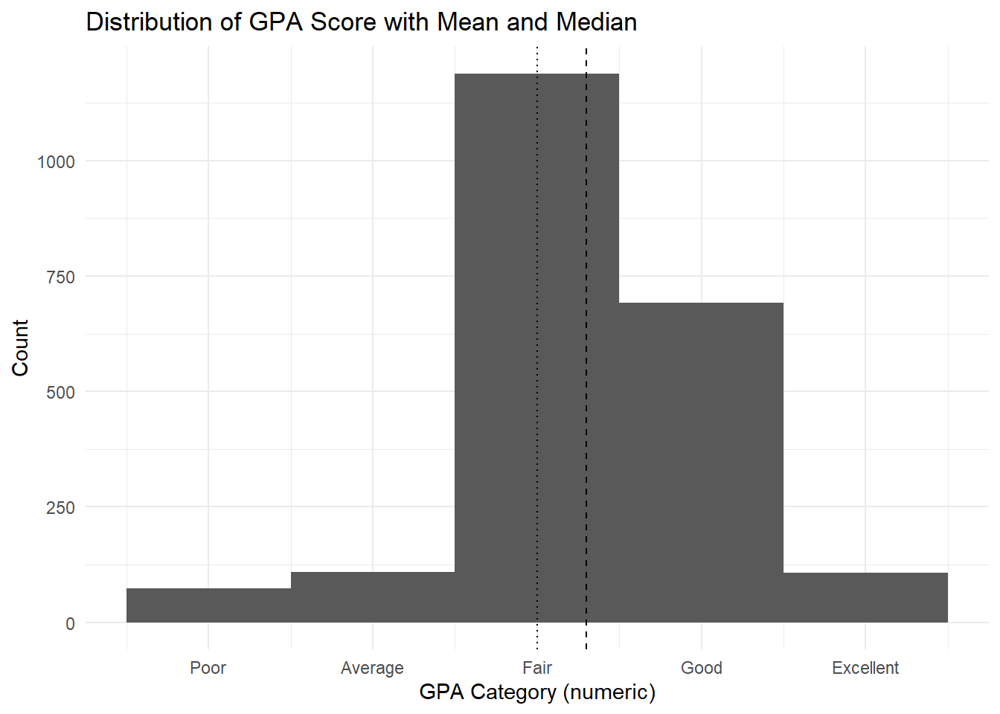
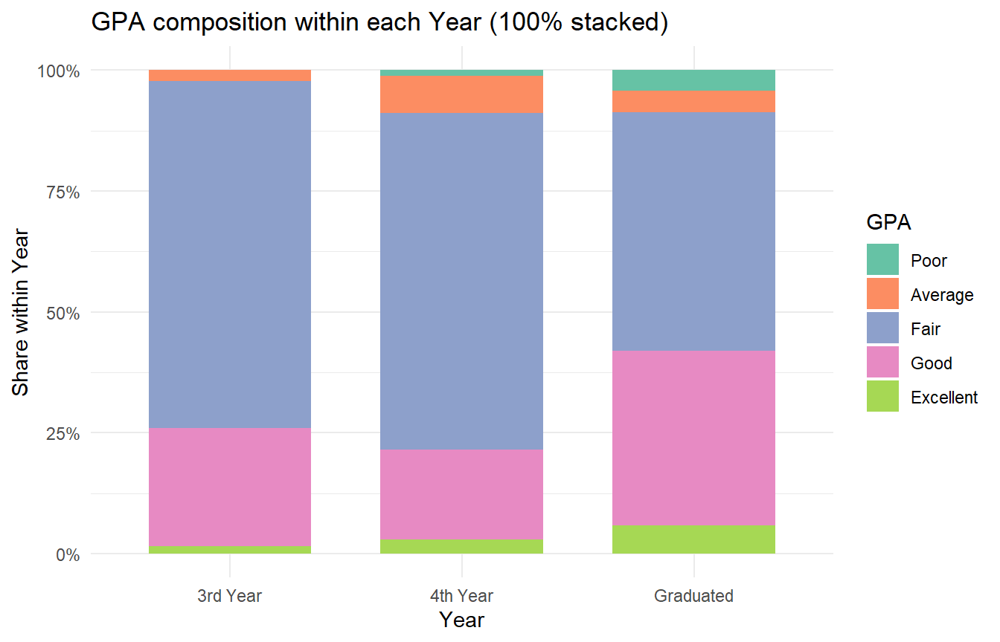
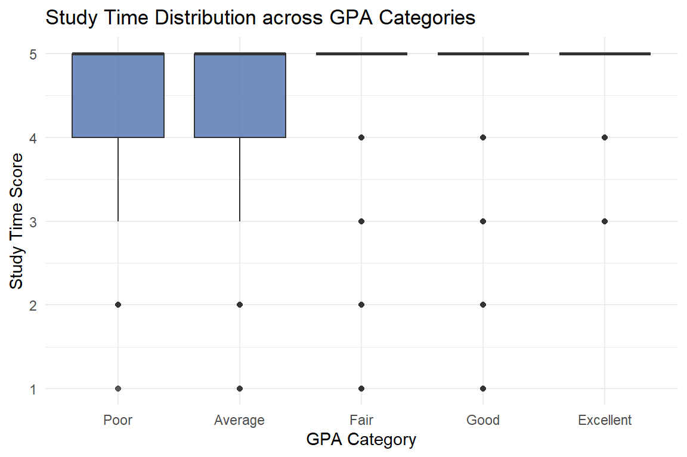
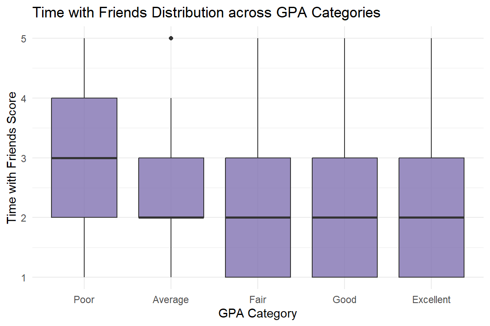
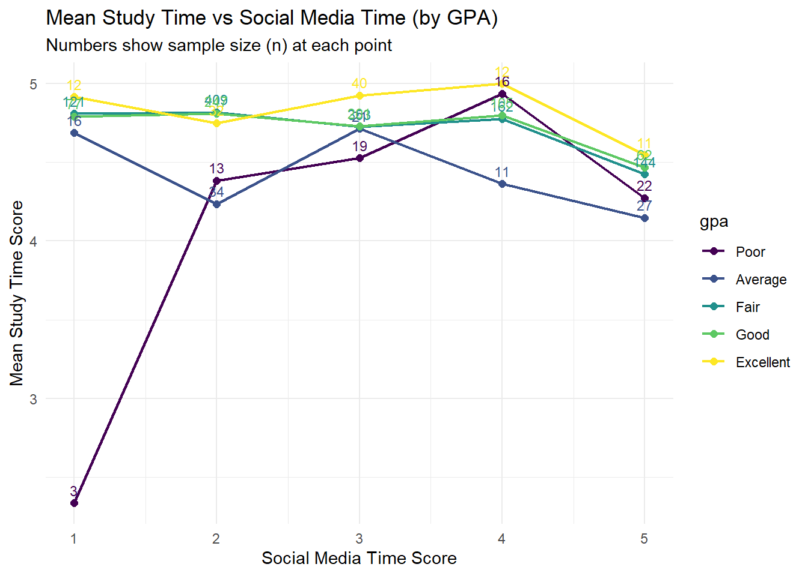
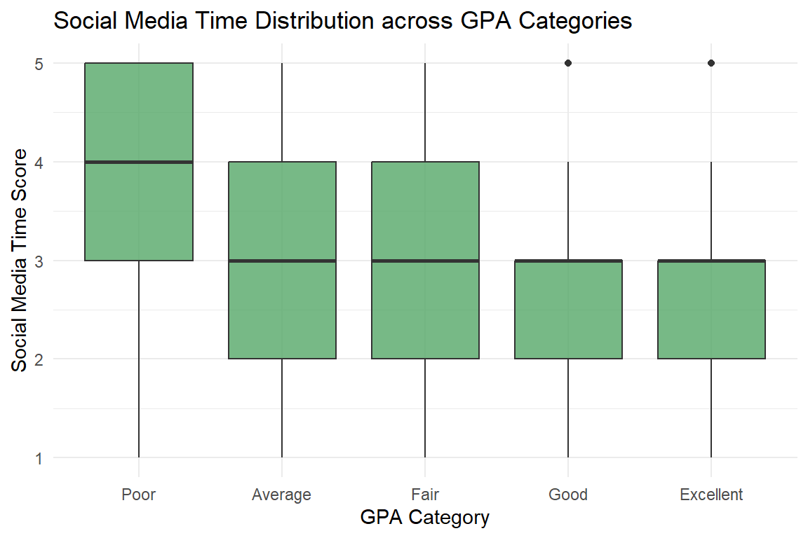

#| label: setup
#| include: trueTH_EX1
library(tidyverse)
library(readxl)
library(janitor)
library(patchwork)
library(scales)1. Data Loading
df_raw <- read_excel("Database paper.xlsx", sheet = "Sheet1")
glimpse(df_raw) Rows: 2,170
Columns: 22
$ Year <dbl> 5, 5, 5, 5, 5, 5, 5, 5, 5, 5, 5, 5, 5, 5, 5, 5, 5, …
$ Gender <dbl> 2, 1, 2, 2, 1, 2, 2, 2, 2, 2, 1, 2, 2, 2, 2, 2, 2, …
$ Policy_Stu <dbl> 2, 2, 2, 2, 1, 2, 2, 2, 2, 2, 2, 2, 2, 1, 2, 2, 2, …
$ Minority_Stu <dbl> 2, 2, 2, 2, 2, 2, 2, 2, 2, 2, 2, 2, 2, 2, 2, 2, 2, …
$ Poor_Stu <dbl> 2, 2, 2, 2, 2, 2, 2, 2, 2, 2, 2, 2, 2, 2, 2, 2, 2, …
$ Father_Edu <dbl> 4, 3, 4, 5, 2, 5, 6, 5, 5, 5, 3, 3, 3, 3, 3, 4, 5, …
$ Mother_Edu <dbl> 4, 3, 4, 4, 3, 5, 5, 4, 5, 4, 3, 3, 3, 4, 3, 4, 5, …
$ Father_Occupation <dbl> 2, 2, 1, 1, 3, 1, 1, 5, 1, 3, 3, 3, 3, 3, 2, 2, 4, …
$ Mother_Occupation <dbl> 3, 4, 2, 1, 3, 2, 4, 3, 1, 3, 3, 3, 3, 3, 2, 2, 4, …
$ Time_Friends <dbl> 2, 1, 1, 2, 1, 1, 2, 2, 1, 3, 2, 2, 2, 2, 2, 1, 3, …
$ Time_SocicalMedia <dbl> 2, 3, 2, 2, 2, 3, 2, 2, 2, 2, 2, 1, 2, 2, 2, 3, 4, …
$ Time_Studying <dbl> 5, 5, 5, 5, 1, 2, 5, 5, 5, 5, 5, 5, 5, 1, 5, 5, 5, …
$ GPA <dbl> 4, 3, 4, 4, 4, 4, 3, 5, 5, 3, 3, 4, 4, 3, 5, 4, 4, …
$ Adapt_Learning_Uni <dbl> 4, 3, 4, 4, 5, 4, 4, 4, 4, 3, 4, 4, 4, 5, 4, 4, 5, …
$ Study_Methods <dbl> 4, 3, 4, 4, 5, 4, 4, 4, 4, 4, 4, 4, 4, 5, 4, 3, 5, …
$ SupportOf_Uni <dbl> 3, 3, 4, 5, 5, 5, 5, 5, 4, 5, 4, 4, 4, 5, 4, 4, 5, …
$ SupportOf_Lec <dbl> 4, 4, 4, 5, 5, 4, 5, 4, 4, 5, 4, 4, 4, 5, 4, 4, 5, …
$ Facilitie_Uni <dbl> 4, 4, 3, 5, 5, 5, 5, 4, 4, 5, 4, 4, 4, 5, 4, 3, 5, …
$ Quality_Lecturer <dbl> 4, 3, 4, 5, 5, 5, 4, 5, 5, 5, 4, 4, 4, 5, 4, 4, 5, …
$ TrainingCurriculum <dbl> 4, 3, 4, 4, 5, 4, 5, 4, 4, 5, 4, 4, 4, 5, 4, 3, 5, …
$ Competitive_Class <dbl> 3, 3, 4, 4, 4, 3, 4, 3, 4, 4, 4, 4, 4, 5, 4, 4, 5, …
$ InfuenceF_Friends <dbl> 3, 4, 4, 4, 5, 3, 5, 4, 4, 4, 4, 4, 4, 5, 4, 5, 4, …dim(df_raw)[1] 2170 22colSums(is.na(df_raw)) Year Gender Policy_Stu Minority_Stu
0 0 0 0
Poor_Stu Father_Edu Mother_Edu Father_Occupation
0 0 0 0
Mother_Occupation Time_Friends Time_SocicalMedia Time_Studying
0 0 0 0
GPA Adapt_Learning_Uni Study_Methods SupportOf_Uni
0 0 0 0
SupportOf_Lec Facilitie_Uni Quality_Lecturer TrainingCurriculum
0 0 0 0
Competitive_Class InfuenceF_Friends
0 0 2. Data Preparation
df_tmp <- df_raw %>% clean_names()
names(df_tmp) [1] "year" "gender" "policy_stu"
[4] "minority_stu" "poor_stu" "father_edu"
[7] "mother_edu" "father_occupation" "mother_occupation"
[10] "time_friends" "time_socical_media" "time_studying"
[13] "gpa" "adapt_learning_uni" "study_methods"
[16] "support_of_uni" "support_of_lec" "facilitie_uni"
[19] "quality_lecturer" "training_curriculum" "competitive_class"
[22] "infuence_f_friends" df <- df_raw %>%
clean_names() %>%
rename(time_social_media = time_socical_media) %>%
mutate(
year = factor(year, levels = c(3,4,5),
labels = c("3rd Year","4th Year","Graduated"),
ordered = TRUE),
gender = factor(gender, levels = c(1,2),
labels = c("Male","Female")),
policy_stu = factor(policy_stu, levels = c(1,2),
labels = c("Yes","No")),
minority_stu = factor(minority_stu, levels = c(1,2),
labels = c("Yes","No")),
poor_stu = factor(poor_stu, levels = c(1,2),
labels = c("Yes","No")),
gpa = factor(gpa, levels = 1:5,
labels = c("Poor","Average","Fair","Good","Excellent"),
ordered = TRUE)
)
glimpse(df)Rows: 2,170
Columns: 22
$ year <ord> Graduated, Graduated, Graduated, Graduated, Gradua…
$ gender <fct> Female, Male, Female, Female, Male, Female, Female…
$ policy_stu <fct> No, No, No, No, Yes, No, No, No, No, No, No, No, N…
$ minority_stu <fct> No, No, No, No, No, No, No, No, No, No, No, No, No…
$ poor_stu <fct> No, No, No, No, No, No, No, No, No, No, No, No, No…
$ father_edu <dbl> 4, 3, 4, 5, 2, 5, 6, 5, 5, 5, 3, 3, 3, 3, 3, 4, 5,…
$ mother_edu <dbl> 4, 3, 4, 4, 3, 5, 5, 4, 5, 4, 3, 3, 3, 4, 3, 4, 5,…
$ father_occupation <dbl> 2, 2, 1, 1, 3, 1, 1, 5, 1, 3, 3, 3, 3, 3, 2, 2, 4,…
$ mother_occupation <dbl> 3, 4, 2, 1, 3, 2, 4, 3, 1, 3, 3, 3, 3, 3, 2, 2, 4,…
$ time_friends <dbl> 2, 1, 1, 2, 1, 1, 2, 2, 1, 3, 2, 2, 2, 2, 2, 1, 3,…
$ time_social_media <dbl> 2, 3, 2, 2, 2, 3, 2, 2, 2, 2, 2, 1, 2, 2, 2, 3, 4,…
$ time_studying <dbl> 5, 5, 5, 5, 1, 2, 5, 5, 5, 5, 5, 5, 5, 1, 5, 5, 5,…
$ gpa <ord> Good, Fair, Good, Good, Good, Good, Fair, Excellen…
$ adapt_learning_uni <dbl> 4, 3, 4, 4, 5, 4, 4, 4, 4, 3, 4, 4, 4, 5, 4, 4, 5,…
$ study_methods <dbl> 4, 3, 4, 4, 5, 4, 4, 4, 4, 4, 4, 4, 4, 5, 4, 3, 5,…
$ support_of_uni <dbl> 3, 3, 4, 5, 5, 5, 5, 5, 4, 5, 4, 4, 4, 5, 4, 4, 5,…
$ support_of_lec <dbl> 4, 4, 4, 5, 5, 4, 5, 4, 4, 5, 4, 4, 4, 5, 4, 4, 5,…
$ facilitie_uni <dbl> 4, 4, 3, 5, 5, 5, 5, 4, 4, 5, 4, 4, 4, 5, 4, 3, 5,…
$ quality_lecturer <dbl> 4, 3, 4, 5, 5, 5, 4, 5, 5, 5, 4, 4, 4, 5, 4, 4, 5,…
$ training_curriculum <dbl> 4, 3, 4, 4, 5, 4, 5, 4, 4, 5, 4, 4, 4, 5, 4, 3, 5,…
$ competitive_class <dbl> 3, 3, 4, 4, 4, 3, 4, 3, 4, 4, 4, 4, 4, 5, 4, 4, 5,…
$ infuence_f_friends <dbl> 3, 4, 4, 4, 5, 3, 5, 4, 4, 4, 4, 4, 4, 5, 4, 5, 4,…3. GPA score distribution with mean/median
df2 <- df %>% mutate(gpa_score = as.numeric(gpa))
mean_gpa <- mean(df2$gpa_score, na.rm = TRUE)
med_gpa <- median(df2$gpa_score, na.rm = TRUE)
ggplot(df2, aes(x = gpa_score)) +
geom_histogram(binwidth = 1, boundary = 0.5, closed = "left") +
geom_vline(xintercept = mean_gpa, linetype = "dashed") +
geom_vline(xintercept = med_gpa, linetype = "dotted") +
scale_x_continuous(breaks = 1:5, labels = c("Poor","Average","Fair","Good","Excellent")) +
labs(
x = "GPA Category (numeric)",
y = "Count",
title = "Distribution of GPA Score with Mean and Median"
) +
theme_minimal()
Observation 1:
The histogram clearly shows that student performance is concentrated in the middle. The vast majority of students fall into the “Fair” and “Good” categories, while extremes are rare—very few students reported “Poor” or “Excellent” results. The mean and median are nearly identical and sit close to the “Fair” mark. This symmetry suggests a balanced distribution where most students perform at an average to slightly above-average level, providing a stable baseline for further analysis.
4. GPA distribution by Year
df %>%
count(year, gpa) %>%
group_by(year) %>%
mutate(prop = n / sum(n)) %>%
ungroup() %>%
ggplot(aes(x = year, y = prop, fill = gpa)) +
geom_col(position = "fill", width = 0.7) +
scale_y_continuous(labels = scales::percent_format()) +
scale_fill_brewer(palette = "Set2", name = "GPA") +
labs(
x = "Year",
y = "Share within Year",
title = "GPA composition within each Year (100% stacked)"
) +
theme_minimal() +
theme(legend.position = "right")
Observation 2:
This chart compares the makeup of GPA categories across different year groups. While “Fair” is the dominant grade for all, clear differences exist. The “Graduated” group has a noticeably higher proportion of “Good” and “Excellent” students compared to undergraduates. Conversely, 4th-year students show the highest concentration in the “Fair” category. This pattern suggests that academic performance may improve slightly as students near or complete graduation. Note that this shows relative proportions within each year, not absolute student numbers.
5. Study Time and GPA
df %>%
ggplot(aes(x = gpa, y = time_studying)) +
geom_boxplot(fill = "#4C72B0", alpha = 0.8) +
labs(
x = "GPA Category",
y = "Study Time Score",
title = "Study Time Distribution across GPA Categories"
) +
theme_minimal()
Observation 3:
Surprisingly, reported study time does not clearly distinguish between GPA levels. The boxplots show that median study time is high (near the maximum score of 5) across all groups, from “Poor” to “Excellent.” Although high performers report high study times, so do the lower performers, resulting in significant overlap. The data is heavily bunched at the top, suggesting most students claim to study hard regardless of their results. This implies that study quantity alone is not a strong differentiator for performance in this dataset.
7. Time with Friends and GPA
df %>%
ggplot(aes(x = gpa, y = time_friends)) +
geom_boxplot(fill = "#8172B2", alpha = 0.8) +
labs(
x = "GPA Category",
y = "Time with Friends Score",
title = "Time with Friends Distribution across GPA Categories"
) +
theme_minimal()
Observation 5:
Similar to social media, spending time with friends shows a slight negative link with GPA. The “Poor” category has a visibly higher median score for socializing compared to other groups. Students in the “Fair” through “Excellent” ranges report lower median values, generally clustering around a score of 2. While the difference isn’t massive, the trend indicates that students with lower grades tend to report more time socializing, whereas higher performers report slightly less.
8. Standardised Time Behaviours by GPA
df_long <- df %>%
select(gpa, time_studying, time_social_media, time_friends) %>%
pivot_longer(
cols = c(time_studying, time_social_media, time_friends),
names_to = "metric",
values_to = "score"
) %>%
mutate(
metric = recode(metric,
time_studying = "Study time",
time_social_media = "Social media time",
time_friends = "Time with friends"),
z = as.numeric(scale(score))
)
df_sum <- df_long %>%
group_by(gpa, metric) %>%
summarise(
mean_z = mean(z, na.rm = TRUE),
se = sd(z, na.rm = TRUE) / sqrt(n()),
.groups = "drop"
) %>%
mutate(
lower = mean_z - 1.96 * se,
upper = mean_z + 1.96 * se
)
ggplot(df_sum, aes(x = gpa, y = mean_z, group = metric)) +
geom_hline(yintercept = 0, linetype = "dashed") +
geom_errorbar(aes(ymin = lower, ymax = upper), width = 0.15) +
geom_point(size = 2) +
facet_wrap(~ metric, ncol = 1) +
labs(
x = "GPA Category",
y = "Standardised score (z-score)",
title = "Standardised Time Behaviours across GPA Categories",
subtitle = "Mean ± 95% CI; dashed line = overall average (z = 0)"
) +
theme_minimal()
Observation 6:
Standardising these behaviours into Z-scores reveals a clear trade-off. The “Poor” group scores above average (positive Z-scores) for social media and time with friends, but below average for study time. Conversely, “Good” and “Excellent” students show the opposite pattern: they score above average in study intensity but below average in social activities. This chart concisely summarises the behavioural split: higher grades correlate with more studying and less leisure time, while lower grades show the reverse.
9. Interaction between Social Media Time and Study Time across GPA Levels
df %>%
group_by(gpa, time_social_media) %>%
summarise(
mean_study = mean(time_studying, na.rm = TRUE),
n = n(),
.groups = "drop"
) %>%
ggplot(aes(x = time_social_media, y = mean_study, color = gpa, group = gpa)) +
geom_line(linewidth = 0.8) +
geom_point(size = 2) +
geom_text(aes(label = n), vjust = -0.7, size = 3, show.legend = FALSE) +
scale_x_continuous(breaks = 1:5) +
scale_y_continuous(breaks = 1:5) +
labs(
x = "Social Media Time Score",
y = "Mean Study Time Score",
title = "Mean Study Time vs Social Media Time (by GPA)",
subtitle = "Numbers show sample size (n) at each point"
) +
theme_minimal()
Observation 7:
This plot explores if study time changes with social media use. For “Good” and “Excellent” students (top lines), study time remains consistently high regardless of how much social media they use. Their commitment to studying appears resilient to distractions. In contrast, the “Poor” group shows erratic patterns, likely due to the small sample size at certain points. Overall, this suggests that high performers maintain their study habits even if they use social media, rather than a simple one-to-one trade-off.
10. Association between Survey Factors and GPA
library(forcats)
# 1. Prepare data
df_corr <- df %>%
mutate(gpa_score = as.numeric(gpa)) # Convert GPA to numeric 1-5
# 2. Define the list of variables to analyse
vars <- c(
"time_studying", "time_social_media", "time_friends",
"support_of_uni", "support_of_lec",
"quality_lecturer", "facilitie_uni",
"adapt_learning_uni", "study_methods",
"training_curriculum", "competitive_class",
"influence_f_friends"
)
# 3. Calculate Spearman correlation coefficients
corr_tbl <- df_corr %>%
# Select GPA and the variables defined above
select(gpa_score, any_of(vars)) %>%
# Convert to long format for grouped calculation
pivot_longer(-gpa_score, names_to = "factor", values_to = "score") %>%
# Ensure scores are numeric
mutate(score = as.numeric(score)) %>%
group_by(factor) %>%
summarise(
# Calculate correlation; use="complete.obs" automatically ignores missing values
rho = cor(gpa_score, score, method = "spearman", use = "complete.obs"),
.groups = "drop"
) %>%
# Sort factors and format labels
mutate(
label = sprintf("%.2f", rho),
factor = fct_reorder(factor, rho)
)
# 4. Plotting
ggplot(corr_tbl, aes(x = rho, y = factor)) +
geom_vline(xintercept = 0, linetype = "dashed", color = "gray50") +
geom_col(width = 0.7, fill = "steelblue") + # Set color for better visibility
geom_text(
aes(label = label),
hjust = ifelse(corr_tbl$rho >= 0, -0.2, 1.2),
size = 3.5
) +
scale_x_continuous(limits = c(-0.5, 0.5), breaks = seq(-0.5, 0.5, 0.1)) +
labs(
title = "Association between Survey Factors and GPA",
subtitle = "Spearman correlation coefficients (Data-driven Insights)",
x = "Spearman Correlation (rho)",
y = NULL
) +
theme_minimal() +
theme(
panel.grid.major.y = element_blank(),
plot.title = element_text(face = "bold")
)
Observation 8:
This chart ranks factors by their correlation with GPA. Overall, no single factor is a strong predictor, as all correlations are weak (below 0.2). “Study methods” and “Adaptation to university” show the strongest positive links, suggesting that how students study matters more than just time spent. On the negative side, “Social media” and “Time with friends” show slight inverse relationships with grades. Institutional factors like university support show almost no correlation, highlighting that personal habits track closer to GPA than external support.
11. Conclusion
In this analysis, I explored how different habits and factors relate to student GPA. The data shows that most students fall into the “Fair” or “Good” categories, with very few at the extremes.
Key takeaways from the visualisations include:
- Time Management Matters: There is a clear trade-off in how students spend their time. High-performing students generally spend less time on social media and with friends compared to those with lower grades.
- Quality Over Quantity: Surprisingly, the total time spent studying does not strongly predict GPA. Everyone claims to study hard, but the correlation analysis suggests that how students study (“Study methods”) and how well they adapt to university life are more important than just the number of hours put in.
- External Factors are Less Impactful: Institutional factors, such as university facilities or support, showed almost no link to academic performance in this dataset.
Overall, while no single factor guarantees a high GPA, the results suggest that academic success is driven more by personal habits and adaptability than by external university support.
12. References
Dataset & Article:
Tran, V. D., Nguyen, K. S. T., & Le, D. N. (2025). Dataset of factors affecting learning outcomes of students at the University of Education, Vietnam National University, Hanoi. Data in Brief, 59, 111438. https://doi.org/10.1016/j.dib.2025.111438
6. Social Media Time and GPA

Observation 4:
A clearer negative trend appears here compared to study time. Students with “Poor” GPAs report a higher median time spent on social media and a wider range of usage habits. In contrast, “Good” and “Excellent” students tend to report lower social media usage, clustering around the lower end of the scale. While there is still overlap between the groups, the pattern suggests that high academic achievers generally spend less time on social media than their lower-performing peers.